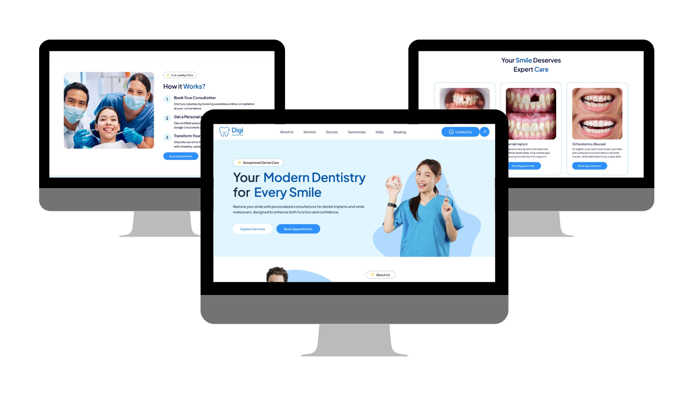
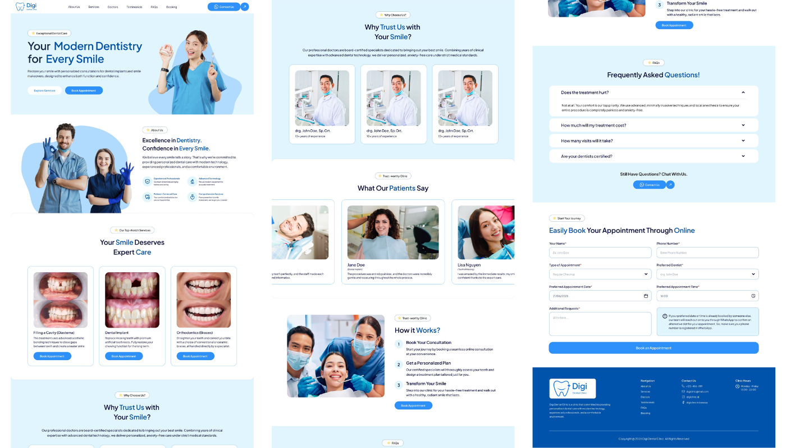

Digi Dental Clinic Website Design

Project Overview
Digi Dental Clinic is a modern dental clinic that offers comprehensive dental care services, including routine check-ups, dental implants, orthodontic treatments, and smile makeovers.
This project focuses on designing a responsive website that allows patients to easily explore services, learn about the clinic, read testimonials, and book appointments online without the need for lengthy phone consultations.
The website aims to establish trust and professionalism while providing a seamless digital experience for both new and existing patients.
Problem Statement
Simplifying Access to Dental Services
Many patients struggle to find trustworthy dental information and often experience difficulties booking appointments due to limited online accessibility and confusing clinic websites.
The challenge was to design a website that provides clear information, builds credibility, and encourages patients to confidently schedule appointments online.
Design Process
Research
Conducted competitor analysis and explored user needs to understand how patients search for dental services and book appointments online.
- Healthcare website benchmarking.
- Competitor analysis.
- Patient pain point identification.
- Information architecture planning.
UX Strategy
Defined user journeys and organized the website structure to ensure patients can quickly access information and schedule appointments.
- User flow mapping.
- Feature prioritization.
- Navigation structure design.
- Booking experience planning.
Wireframing
Created low-fidelity wireframes to establish content hierarchy and page layouts before applying visual design.
Visual Design
Developed a clean and trustworthy visual identity using soft blue tones, spacious layouts, and friendly imagery to reduce anxiety commonly associated with dental treatments.
Responsive Prototype
Designed responsive desktop layouts that showcase services, testimonials, FAQs, and an online booking system to deliver a seamless patient experience.

Key Features
- Modern and responsive landing page.
- Service information and treatment details.
- Doctor profiles and clinic credibility section.
- Patient testimonials.
- Frequently Asked Questions (FAQ).
- Online appointment booking form.
- Contact and clinic information.
Design Highlights
- Established a trustworthy healthcare visual identity.
- Designed intuitive navigation and information hierarchy.
- Reduced friction during appointment booking.
- Applied accessibility and readability principles.
- Created a professional yet approachable user experience.